204 — Proyecto: red multi-región y multi-cloud
Parte: 16 — Redes cloud avanzadas, conectividad híbrida y edge
Nivel: avanzado · Horas estimadas: 8
Laboratorio: capstone · Estado: EXECUTABLE_CORE
🎯 Propósito
Montar en un solo diseño lo de las once clases anteriores: direccionamiento, encaminamiento, nombres, entrada, borde, conectividad, salida, tráfico interno, diagnóstico y extremo, sobre varias regiones y varias nubes. La clase da el orden de decisión, el entregable y los criterios. Y cierra la parte 16: corrige las cinco predicciones de la clase 192 —tres acertadas, dos a medias—, actualiza el recuento de leyes, añade la ley 25 y escribe la hipótesis de la parte 17.
📚 Resultados de aprendizaje
Al finalizar podrás:
- Producir un diseño de red multirregión y multinube coherente.
- Ordenar las decisiones de red por coste de cambio.
- Comprobar el diseño con las pruebas negativas de toda la parte.
- Corregir las cinco predicciones de la clase 192 con evidencia.
- Escribir la hipótesis de la parte 17 en forma refutable.
🧩 Conceptos centrales
| Concepto | Comprensión verificable |
|---|---|
diseño de red completo |
Conjunto coherente de decisiones desde el direccionamiento hasta el diagnóstico, sin huecos. |
orden por coste de cambio |
Direcciones primero, diagnóstico al final. Renumerar cuesta meses; añadir un panel, horas. |
coherencia entre nubes |
Que el plan de direcciones, los nombres y las políticas no se contradigan entre proveedores. |
prueba negativa de red |
Comprobación que provoca el fallo de red a propósito y verifica la respuesta declarada. |
ley 25 |
Lo provisional sobrevive a su motivo; sin fecha de caducidad, para siempre. |
hipótesis de parte |
Afirmación refutable escrita antes de estudiar, que la parte siguiente corrige con evidencia. |
🧠 Modelo mental
La red cloud es un sistema distribuido de rutas, identidades y políticas; cada salto añade latencia, costo y una frontera de fallo.
Aplicado a esta clase, separa siempre cuatro planos: intención (qué necesita el usuario), configuración (qué declaramos), estado observado (qué existe de verdad) y evidencia (cómo sabemos que cumple). Confundirlos produce diseños que se ven correctos en un diagrama pero fallan al operar.
🗺️ Flujo de razonamiento

📖 Desarrollo
1. El encargo y su orden
El encargo. CloudShop opera en tres nubes, dos regiones por nube, un centro de datos, once oficinas y trescientas cuarenta tiendas. El proyecto consiste en producir el diseño de red completo.
El orden de decisión, por coste de cambio:
1 DIRECCIONAMIENTO clase 193
espacio reservado, jerarquía, registro central
→ lo más caro de cambiar de todo el programa
2 CONECTIVIDAD FÍSICA Y LÓGICA clases 198, 199
enlaces y túneles con su redundancia sin causa común
concentradores por región, unidos entre sí
3 ENCAMINAMIENTO Y SEGMENTACIÓN clase 194
tablas por función; cerrar por ausencia de ruta
anuncios resumidos y filtros explícitos
4 CONTROL DE SALIDA clase 200
puntos privados, denegación por defecto, perímetro de
datos
5 NOMBRES clase 195
zonas, vista partida, TTL atados al plazo de recuperación
6 ENTRADA Y CERTIFICADOS clase 196
capas 4 y 7, reparto, salud, renovación automática
7 BORDE Y CACHÉ clase 197
clave de caché, rancio, escudo de origen
8 TRÁFICO INTERNO clase 201
identidad de carga y autorización, con lo mínimo
9 DIAGNÓSTICO clase 202
flujos sin muestreo, observación del núcleo, captura
preautorizada
10 EXTREMO clase 203
qué opera sin conexión, con qué límites y cómo reconcilia
Y las dos reglas del orden:
los pasos 1 y 2 condicionan todo lo demás
los pasos 9 y 10 se pueden cambiar en semanas
→ y por eso la discusión debe gastarse en los primeros
Y el error de método que hunde este proyecto:
empezar por el paso 6 o el 7, que son los visibles
→ y descubrir en el paso 1 que hay solapamiento y que nada
de lo anterior se puede conectar clase 193
2. El entregable y las pruebas
El documento, en unas quince páginas:
1 PLAN DE DIRECCIONAMIENTO
espacio, jerarquía, reservas y registro
consumidores contados, incluidos pods y puntos privados
2 TOPOLOGÍA
enlaces y túneles, con ruta física documentada
concentradores y su unión entre regiones y nubes
qué anuncia y qué acepta cada extremo
3 SEGMENTACIÓN
tablas de rutas por función
qué alcanza cada segmento, y qué NO por ausencia de ruta
4 SALIDA
puntos privados, destinos permitidos con dueño y
caducidad, perímetro de datos
5 NOMBRES
zonas, vista partida, TTL por volatilidad, resolución
entre nubes y corporativa
6 ENTRADA
capas, algoritmos, comprobaciones, plazos ordenados
inventario de certificados y su renovación
7 BORDE
claves de caché por ruta, políticas de rancio, escudo
8 TRÁFICO INTERNO
identidad, autorización, y qué capacidades NO se adoptan
9 DIAGNÓSTICO
qué se registra, sin muestreo dónde, y procedimiento de
captura
10 EXTREMO
operaciones sin conexión, límites y reconciliación
11 CAMINOS ESPERADOS de los flujos principales clase 194
12 PRUEBAS NEGATIVAS con su resultado
13 LO QUE NO SE HACE, y por qué
Las pruebas negativas de la parte, que son el criterio de terminado:
☐ superar el límite de prefijos de una sesión y ver la caída
☐ trazar ida y vuelta de los flujos principales
☐ crear una ruta a un rango y comprobar que no se propaga
donde no debe
☐ alcanzar producción desde no-producción
☐ sacar datos a un almacén de otra organización
☐ sacar datos por consultas de nombres
☐ cambiar un registro y medir cuánto tarda cada servicio
☐ enviar un paquete grande sin fragmentar por cada túnel
☐ desconectar el enlace principal y cronometrar la vuelta
☐ dejar caducar un certificado de prueba y ver la alerta
☐ degradar una réplica y ver si el reparto la evita
☐ invalidar caché en masa y medir la carga del origen
☐ inyectar fallo en una dependencia declarada blanda
☐ desconectar el plano de control de la SD-WAN
☐ cortar la luz a un dispositivo a mitad de operación
Y los criterios de evaluación, publicados antes:
```text peso 1 el plan de direcciones cuenta los consumidores ocultos 3 2 hay registro central obligatorio y automatizado 2 3 la redundancia no tiene causa común, documentada 3 4 la segmentación cierra por ausencia de ruta 3 5 la salida está cerrada y el perímetro de datos existe 3 6 los TTL están atados al plazo de recuperación 2 7 los certificados tienen alerta por antigüedad 2 8 la clave de caché está justificada por ruta 2 9 solo se adoptan las capacidades de malla que faltan 2 10 los flujos sin muestreo en lo crítico 1 11 está escrito qué opera sin conexión y con qué límites 3 12 están escritos los caminos esperados 2 13 las pruebas negativas se ejecutaron y hay fallos publicados 3
Y el 13 pesa como los que más, por el mismo motivo de siempre:
```text
en este programa, la proporción de pruebas negativas que
fallan la primera vez ha estado entre el 27 % y el 45 %
→ un proyecto con cero fallos no las ejecutó ley 22
3. Cierre de la parte 16: corrección de las cinco predicciones
Las cinco predicciones de la clase 192, corregidas con la evidencia de las clases 193 a 203.
1. «la red será la capa donde más decisiones irreversibles se
toman con menos deliberación: los rangos y la conectividad
se eligen en una tarde y condicionan una década»
CORRECTA, y con las cifras más contundentes de la parte.
87 redes, 37 sin registro alguno, 10.0.0.0/16 usado en 6
sitios a la vez, y 172.17 solapando con un motor de
contenedores desde 2022. Reservar el espacio y registrar
los bloques al principio costaba 2 días; renumerar una
sola red costó 25 personas-semana, y el plazo no lo marcó
ninguna decisión técnica sino la lista de permitidos de
un socio. Ley 14 en su forma más cara.
2. «la mayoría de los problemas de red no serán de
encaminamiento ni de rendimiento sino de nombres y
certificados»
A MEDIAS, y la cuenta lo aclara. De los diecisiete
incidentes de la parte: nombres 5, certificados 2,
encaminamiento 5, y el resto repartido entre MTU,
redundancia falsa, reparto, exfiltración y reconciliación.
Nombres y certificados suman 7 de 17 (41 %): la familia
más grande, pero no la mayoría, y empatados con
encaminamiento en incidentes puros. Donde sí acertamos de
pleno es en la GRAVEDAD: las dos únicas caídas TOTALES
del año fueron de certificado, y ninguna por caducidad
sorpresa sino por automatización rota en silencio.
3. «el coste de salida y el tráfico entre zonas volverán a
ser la línea más grande y la peor atribuida, y seguirá
sin tener dueño»
PRIMERA MITAD CORRECTA: el 82 % del tráfico saliente iba
a servicios del propio proveedor pagándose como salida a
internet, y no lo miraba nadie. SEGUNDA MITAD FALLADA, y
por un motivo que no habíamos previsto: cerrar la salida
por seguridad OBLIGÓ a declarar cada destino con dueño y
caducidad. Al final del año había 57 destinos con dueño
donde antes había una salida abierta sin ninguno.
Predijimos que seguiría sin dueño y le puso dueño un
proyecto de seguridad, no uno de coste.
4. «la malla aparecerá otra vez como respuesta a problemas
ya resueltos en otra capa, y el análisis honesto la
dejará en una o dos capacidades»
CORRECTA Y EXACTA: de las cinco capacidades, tres estaban
resueltas, se adoptó por dos —identidad y autorización— y
en el modo más barato. Pero incompleta en algo
interesante: la capacidad que más problemas reales
destapó no fue ninguna de las dos que justificaron la
adopción, sino la inyección de fallos, que reveló que dos
de cinco dependencias declaradas blandas eran duras.
5. «el diagnóstico de red será donde más se note la ley 24:
los diagramas omitirán lo mismo, y ahí estarán los
incidentes»
CORRECTA Y SUBESTIMADA. Un camino de desarrollo a los
datos de producción abierto tres años; 1.334 destinos
externos desconocidos, entre ellos una exfiltración de
catorce meses al almacén personal de un antiguo empleado;
96 llamadas entre servicios donde el diagrama declaraba
61; un registro de nombres huérfano de diecinueve meses.
Las cuatro omisiones que la ley 24 nombra aparecieron las
cuatro, y ninguna la detectó una alerta: las detectaron
inventarios.
Marcador: tres correctas, dos a medias. Y por primera vez en el programa el fallo no fue de reparto sino de mecanismo: en la predicción 3 dimos por hecho que un problema de coste sin dueño seguiría sin dueño, y lo resolvió un proyecto de otra disciplina. Los problemas no siempre los arregla quien los sufre.
4. Recuento de leyes, ley 25 e hipótesis de la parte 17
El recuento de leyes, cerrada la parte 16.
ley 13 lo que no se mira deja de funcionar en silencio 39
ley 15 la señal existe y nadie la mira 29
ley 14 el coste se decide al crear, no al pagar 25
ley 22 un procedimiento nunca ejecutado no funciona 24
ley 16 un control que estorba se rodea 23
ley 20 lo que no tiene dueño se filtra y se desperdicia 21
ley 21 el acoplamiento vive en quién escribe 18
ley 19 la compensación hace invisible el fallo 10
ley 17 se optimiza la medida, no el objetivo 10
ley 23 la capacidad la limita lo que ya se mantiene 10
ley 24 lo que no está en el diagrama no se analiza 9
ley 18 lo asíncrono traslada la garantía, no la elimina 8
Y la parte 16 obliga a escribir una ley nueva, que este programa lleva rozando desde la parte 08:
LEY 25
lo provisional sobrevive a su motivo;
sin fecha de caducidad, para siempre
apariciones en esta parte 5
clase 194 una preferencia cambiada «para probar el
respaldo» que llevaba 2 semanas rompiendo la
simetría; una ruta a agujero negro de una
migración de agosto
clase 195 un registro de nombres huérfano de 19 meses
clase 199 31 emparejamientos creados «para una prueba»;
rutas estáticas de una migración terminada en
2022 que abrían desarrollo a producción
clase 200 un agente de monitorización de un contrato
cancelado, aún enviando datos; un script de
exportación de un empleado que ya no estaba
clase 203 nada excluido de la operación sin conexión,
porque nunca se decidió qué excluir
y lo que la distingue de la ley 20
la 20 dice que lo sin dueño se degrada
la 25 dice que lo temporal NO se retira, tenga dueño o no
→ el remedio no es asignar dueño: es poner fecha
La hipótesis de la parte 17 (clases 205 a 216, AWS en profundidad y proyecto productivo), escrita antes de estudiarla para que la clase 216 la corrija:
1. bajar a un proveedor concreto va a revelar que buena parte
de lo que este programa ha tratado como decisiones de
arquitectura son, en ese proveedor, valores por defecto; y
los valores por defecto van a resultar mal elegidos para
producción en más de la mitad de los casos
2. el diseño de la base de datos por patrones de acceso será
la decisión más cara de cambiar de toda la parte, y la
que más veces se tome sin haber escrito los patrones
ley 14
3. la eliminación de secretos mediante federación resultará
sencilla técnicamente y lenta organizativamente: el
obstáculo no será la configuración sino quién tiene
permiso para cambiarla ley 16
4. en el proyecto productivo, más de la mitad de los
problemas que aparezcan no serán de AWS sino de lo mismo
de siempre: algo provisional que no se retiró, una señal
que nadie miraba y un procedimiento nunca ejecutado
leyes 25, 15, 22
5. el coste real del sistema terminado será entre dos y
cuatro veces la estimación inicial, y la diferencia
estará casi toda en partidas que no son cómputo:
transferencia, almacenamiento de registros y servicios
gestionados facturados por petición
Y el cierre de la parte 16: de once clases, lo que más problemas destapó no fue ninguna herramienta de diagnóstico, sino tres inventarios —el de bloques de direcciones, el de destinos de salida y el de llamadas entre servicios—. Ninguno de los tres requería tecnología nueva; los tres encontraron cosas que llevaban años funcionando sin que nadie las hubiera dibujado. La parte 17 baja a un proveedor concreto y construye un sistema productivo entero, empezando por el alojamiento y la entrega. Es la clase 205.
🔬 Ejemplo trabajado
El diseño de red de CloudShop, resuelto con el método de la parte. Lo que sigue es el resumen del entregable con las decisiones que costaron discusión, y el resultado de las quince pruebas negativas —de las que fallaron seis.
Paso 1 · Direccionamiento.
espacio reservado 10.0.0.0/8
jerarquía región /12 · entorno /16 ·
dominio /18 · zona /20 · función /24
reservados a propósito
10.80.0.0/12 adquisiciones
10.96.0.0/11 libre
pods en espacio no enrutado 100.64.0.0/10
→ esta decisión sola evitó pasar de /22 a /18 por zona
registro central obligatorio, automatizado en la plantilla
tiempo para obtener un bloque 40 s
función de aptitud ninguna red sin bloque registrado
Paso 2 · Conectividad.
centro de datos ↔ nube principal
2 enlaces dedicados de 1 Gbps
proveedores de última milla DISTINTOS
edificios de entrada DISTINTOS
ruta física documentada por escrito, tras dos semanas de
insistir clase 198
túnel de respaldo, ejercitado mensualmente
concentradores
uno por región y por nube: 6 en total
emparejados entre sí
63 redes conectadas
2 pares de gran volumen FUERA del concentrador
→ 11.840 €/mes evitados clase 199
tiendas
SD-WAN, 2 enlaces por tienda (fibra + 5G)
política central, autonomía si el plano no responde
Paso 3 · Segmentación.
tablas de rutas
producción · no-producción · compartidos · socios ·
inspección
lo que NO se alcanza, por ausencia de ruta
no-producción → producción
socios → cualquier cosa que no sea la red de intercambio
datos → internet
anuncios
la nube anuncia 2 prefijos resumidos, no 340
la nube acepta 31 prefijos filtrados, no 1.043
alerta al 75 % del límite
Paso 4 · Salida.
27 puntos privados centralizados en red compartida
cortafuegos de salida con denegación por defecto
57 destinos permitidos, cada uno con dueño y caducidad
perímetro de datos en las dos direcciones
resolución forzada por el resolutor propio
coste 9.450 €/mes → 4.250 €/mes
Pasos 5 a 10, resumidos con lo que costó discusión:
NOMBRES
subdominio interno int.cloudshop.com → vista partida solo
en 3 nombres
TTL por volatilidad; 30 s en lo que conmuta
DNSSEC evaluado y NO adoptado, con registro clase 195
ENTRADA
capa 4 con IP fija delante (listas de terceros)
capa 7 detrás: TLS con recifrado, rutas, plazos ordenados
reparto por menor número de conexiones + expulsión de
atípicos
31 certificados, todos automáticos, alerta por antigüedad
BORDE
claves de caché con lista blanca por ruta
rancio mientras refresca y si hay error
invalidación por etiqueta; comodín prohibido
escudo de origen
aciertos globales 71 % → 97,2 %
TRÁFICO INTERNO
malla en modo por nodo, SOLO identidad y autorización
reintentos y plazos siguen en la biblioteca
alcance desde un servicio comprometido 11 → 2
DIAGNÓSTICO
flujos sin muestreo en producción y datos
observación del núcleo en todos los nodos
captura preautorizada, con caducidad de 7 días
panel de RECHAZOS revisado semanalmente
EXTREMO
lista escrita de operaciones sin conexión, con límites
cola persistente idempotente
reglas de reconciliación por tipo de dato
actualizaciones con doble partición y vuelta atrás
Las quince pruebas negativas: seis fallaron.
✓ superar el límite de prefijos → sesión cae, alerta salta
✓ trazar ida y vuelta de los 6 flujos principales
✗ ruta que no debe propagarse
→ se propagó a la tabla de compartidos por una asociación
mal configurada al añadir la sexta región
✓ alcanzar producción desde no-producción → sin ruta
✗ sacar datos al almacén de otra organización
→ funcionó: faltaba política en 4 de los 27 puntos
privados clase 200
✗ sacar datos por consultas de nombres
→ funcionó desde las tiendas: el resolutor forzado se
aplicó en la nube y no en la SD-WAN
✓ cambiar un registro y medir seguimiento → 50 s máximo
✗ paquete grande sin fragmentar por cada túnel
→ 3 de 340 tiendas fallaron; equipos con configuración
antigua
✓ desconectar el enlace principal → 52 s
✓ certificado de prueba caducado → alerta a los 4 min
✓ degradar una réplica → retirada en 35 s
✓ invalidar en masa → prohibido por política; se comprobó
que la API lo rechaza
✗ inyectar fallo en dependencia blanda
→ 2 de 5 eran duras clase 201
✓ desconectar el plano de control de la SD-WAN 4 h
✗ cortar la luz a mitad de operación
→ 1 de 20 se perdió: un modelo de dispositivo no forzaba
la sincronización a disco
Y el análisis de las seis:
dos por aplicación incompleta de un control (puntos
privados, resolutor forzado)
dos por equipos o dispositivos con configuración antigua
una por propagación mal configurada al crecer
una por una premisa no comprobada (dependencias blandas)
→ ninguna por un error de diseño
→ las seis por la distancia entre lo diseñado y lo
desplegado ley 22
Lo que se decidió no hacer:
no adoptar DNSSEC: modo de fallo apaga el dominio y el
riesgo está cubierto por TLS en lo que importa
no adoptar la malla completa: tres capacidades ya resueltas
no inspeccionar el tráfico dentro de un mismo segmento:
triplica coste sin ganar nada
no montar segunda región activa para el flujo de compra:
6.400 €/mes frente a 390 € de pérdida esperada clase 185
no unificar el proveedor de DNS entre nubes: el riesgo del
cambio supera la ventaja; revisar en 12 meses
La lección que este proyecto deja: de las quince pruebas negativas, seis fallaron y ninguna por un error del diseño. Todas por la distancia entre lo que estaba escrito y lo que estaba desplegado: cuatro puntos privados sin política, un resolutor forzado que solo se aplicó en una de las dos topologías, tres tiendas con configuración vieja y un modelo de dispositivo que no sincronizaba a disco. El diseño se puede revisar leyendo; lo desplegado, solo rompiéndolo.
🧪 Laboratorio guiado
Ejecuta desde la raíz:
python classes/part-16-advanced-cloud-networking-edge/204-proyecto-red-multi-region-y-multi-cloud/lab.py
El laboratorio selecciona el motor de práctica capstone y produce
lab_result.json. El escenario, sus comprobaciones y el artefacto esperado corresponden a
esta clase; no requiere credenciales y deja explícito qué debe revalidarse en un sandbox real.
- Lee
exercise.stepsy formula una predicción antes de ejecutar. - Ejecuta la práctica y verifica todos los elementos de
checks. - Provoca el caso de
negative_testy explica la señal observada. - Materializa
multicloud-networkenevidence/usando la plantilla indicada. - Para proveedor real, sigue
sandbox.requires, registra costo y ejecutadestroy.
Evidencia esperada
El artefacto principal es un incremento integrado, demostrable y documentado. Además, la entrega debe incluir el comando ejecutado, la salida estructurada y una conclusión que no exceda lo observado.
🏆 Reto verificable
Construye multicloud-network para el caso CloudShop. Incluye una alternativa descartada,
un supuesto que pueda falsarse, una prueba de fallo y una decisión de rollback.
✅ Criterio de aceptación
- [ ]
lab.pytermina con código 0 y genera JSON válido. - [ ] La entrega conecta al menos tres requisitos con mecanismos verificables.
- [ ] Existe una prueba positiva y una prueba negativa con evidencia.
- [ ] Seguridad, costo y operación aparecen como decisiones, no como anexos.
- [ ] Se declara una limitación y una condición que obligaría a revisar el diseño.
- [ ] Otra persona puede repetir el recorrido sin conocimiento tácito.
⚠️ Errores frecuentes
| Síntoma | Causa probable | Corrección |
|---|---|---|
| Nada de lo diseñado se puede conectar entre sí | Se empezó por las capas visibles y el direccionamiento tenía solapamientos | Decide el plan de direcciones y el registro central antes que ninguna otra cosa de red. |
| Un control se aplica en una topología y no en la otra | El diseño se validó leyendo y no ejecutando | Ejecuta cada prueba negativa desde cada tipo de red: nube, corporativa y sedes. |
| La redundancia contratada no protege del fallo más probable | Causa común física o lógica no comprobada | Exige por escrito la ruta física de cada circuito y revisa también las causas comunes lógicas, como el límite de prefijos. |
| Al crecer, aparecen caminos que no deberían existir | Propagación mal configurada al añadir una región o una red | Declara qué prefijos deben verse desde cada tabla y alerta ante cualquier ruta inesperada. |
| El proyecto declara todas las pruebas superadas | No se ejecutaron: en este programa fallan entre el 27 % y el 45 % la primera vez | Ejecuta y publica los fallos; un resultado sin fallos indica que la prueba no se hizo. |
| Se acumulan rutas, reglas y excepciones que nadie recuerda por qué existen | Se crearon como provisionales y sin fecha de caducidad | Toda excepción, ruta manual o emparejamiento temporal nace con dueño y fecha; sin fecha, no se crea. |
🛡️ Seguridad, ética y costo
Trabaja con cuentas propias o sandboxes autorizados. No publiques secretos, identificadores reales ni datos personales. Antes de crear recursos pagos define presupuesto, etiquetas y comando de destrucción; después verifica que no queden recursos huérfanos. Los ejemplos locales enseñan contratos, pero no certifican cumplimiento ni disponibilidad de producción.
❓ Preguntas de comprobación
- ¿Por qué el direccionamiento se decide antes que cualquier otra cosa de red?
- ¿Cuál de las cinco predicciones de la clase 192 falló y por qué motivo nuevo?
- ¿Qué dice la ley 25 y en qué se distingue de la ley 20?
- ¿Qué proporción de pruebas negativas ha fallado la primera vez en este programa?
- ¿Qué encontraron los tres inventarios de esta parte que ninguna alerta detectó?
🔗 Referencias
- AWS (2025). Building a scalable and secure multi-VPC network infrastructure. https://docs.aws.amazon.com/whitepapers/latest/building-scalable-secure-multi-vpc-network-infrastructure/welcome.html
- Microsoft (2025). Cloud Adoption Framework: network topology and connectivity. https://learn.microsoft.com/en-us/azure/cloud-adoption-framework/ready/landing-zone/design-area/network-topology-and-connectivity
- Google Cloud (2025). Network design decisions in the Architecture Framework. https://cloud.google.com/architecture/framework
- Beyer, B. y otros (2018). The Site Reliability Workbook — verificación con pruebas reales. https://sre.google/workbook/table-of-contents/
- NIST SP 800-207 (2020). Zero Trust Architecture. https://csrc.nist.gov/pubs/sp/800/207/final
- Documentación oficial vigente del servicio implementado; registra URL y fecha de consulta.
📥 Descargar: Parte 16 en PDF · Manual integral